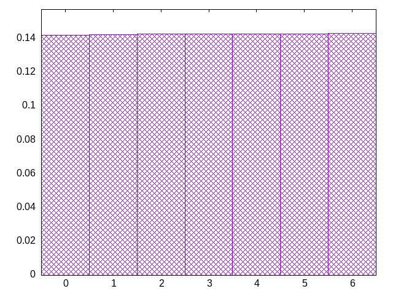
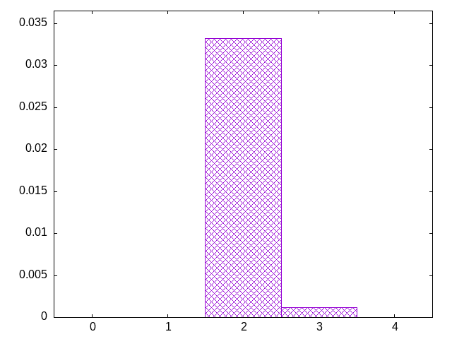

oisotiotsjoljozloijsjsolojlsiololsosjlitiostozszljtsilosllsoiojtjljitliotsltoitiljizlzzjtsltszsioztlzoiljtjoolzljzjiljzotitjltoislsljoolsjlitlojlztziilzolzjlzlstsjlizotzlzlzzoitzzsoiljijlottlsjljotiljliijzszlsozlszjlijtlzsolztsoitszizijszlzstlzsijotitijtsjsltljlzitllzotojlsjoszlotioljozisjlsstoziozsjilzlolsltlsjoszstjloizjlzljjitotoijostijzsljilsooiljoslitliotolioztzsitoljozjootzsosjizjtojttsisitioiojiizitstsjisjlilosjztzlisoiostljzstjiojzjstlsiiozslzjlozjiojizjoztlozjtsisltojlitztotoststziljtlojtosizstljsiozijziltlijlzilojstzoijztosijitzjoslzoitztlzstljstijiltsijzlosizljzisizoisjlzltztoiojisolzoljsjilszsizizsltsioztjisijzsjisltijztstjojtzoszszsziltijljlijtjtolotitijzjzjljozsozsioisiszjililjoszjltjsostoisttsjiololjitsosjotjlzosjstszjsoszsitijziltojzitjololsizjtlislolzsljzsztjosisolzltljljtjzjoiztslotsotjzolllizjlstjojltzotzistiztzotiolzlojijzoizsizjltstoiszotslosojjztiotztotjlzsloizitlzzzltltoslztjijzsotztztitlztoljiolsoisztosioszolzjlzossojstssizjlzzztlisztijoltzzjlstsjosislsiojojtizi
bagginess: 0.0125
bagginess6: 0.2155
distribution1_maxgap: 0.00039500000000000646
distribution2_maxgap: 0.01745901745901746
distribution3_maxgap: 0.002644005288010576
distribution4_maxgap: 0.000335001005003015
diversity: 4.9
entropy: 11.293
evenness_diff: 5.924
evenness_same: 4.506
maxdrought: 69.0
maxflood: 4
peakdrought: 1.0
repchance: 0.0357
seq4_coverage: 1.0000
seq4_follow: 6.911
distribution1_graph:

flood_graph:

similarity: (lower is more similar)
| 0.003 | nes |
| 0.049 | balanced7 |
| 0.109 | fullrandom |
| 0.112 | balanced9 |
| 0.114 | balanced_long_mul_pure |
| 0.120 | bag3 |
| 0.123 | deepbag_window10 |
| 0.124 | bag4 |
| 0.127 | shift14 |
| 0.127 | deepbag_window7 |
| 0.129 | shift10_5 |
| 0.129 | fullrandom_pure |
| 0.131 | balanced_long_add_pure |
| 0.134 | shift21 |
| 0.135 | wet2_size100 |
| 0.146 | seamless_bag3_pure |
| 0.153 | deepbag_fixed10 |
| 0.161 | weight_lin_pure |
| 0.164 | wet3 |
| 0.165 | bag2 |
| 0.166 | shift7 |
| 0.177 | seamless_bag2_pure |
| 0.193 | balanced5 |
| 0.220 | weight2 |
| 0.291 | deepbag_window4 |
| 0.316 | weight |
| 0.358 | deepbag_fixed7 |
| 0.360 | seamless_deep_pure |
| 0.363 | wet3_size12 |
| 0.379 | shirts_g3w7 |
| 0.454 | wet2 |
| 0.489 | tgm |
| 0.492 | shirts_smooth_c10 |
| 0.501 | tgm_pure |
| 0.613 | shirts_smooth_c12 |
| 0.654 | bag |
| 0.656 | bag_pure |
| 0.682 | shift3_5 |
| 0.683 | shirts_smooth_c8 |
| 0.704 | deepbag_fixed4 |
| 0.711 | tgm_tap |
| 0.730 | tgm_tap_pure |
| 0.823 | wet_pure |
| 0.853 | shirts_smooth_c14 |
| 0.860 | shirts_g1w7 |
| 0.888 | ti |
| 0.889 | weight_exp |
| 0.890 | shirts_g1w3 |
| 0.938 | weight_exp_pure |
| 0.948 | wet |
| 1.200 | seamless_bag_pure |
| 1.290 | shirts |
| 1.498 | shirts_smooth |
| 1.583 | repeat_recent_pure |
| 2.607 | shift1_75 |
| 3.768 | repeat_last_pure |
| 8.505 | flatbag |
| 8.505 | flatbag_pure |